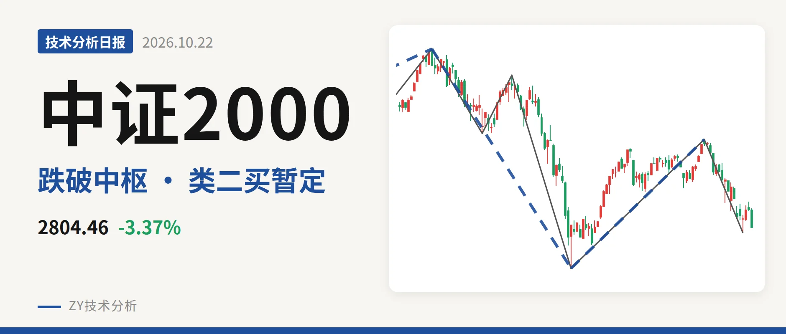
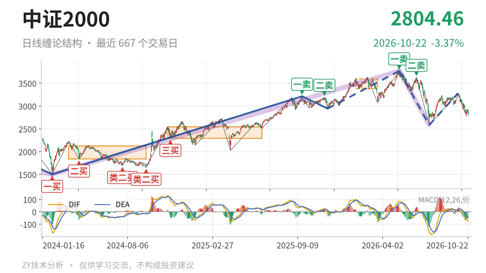
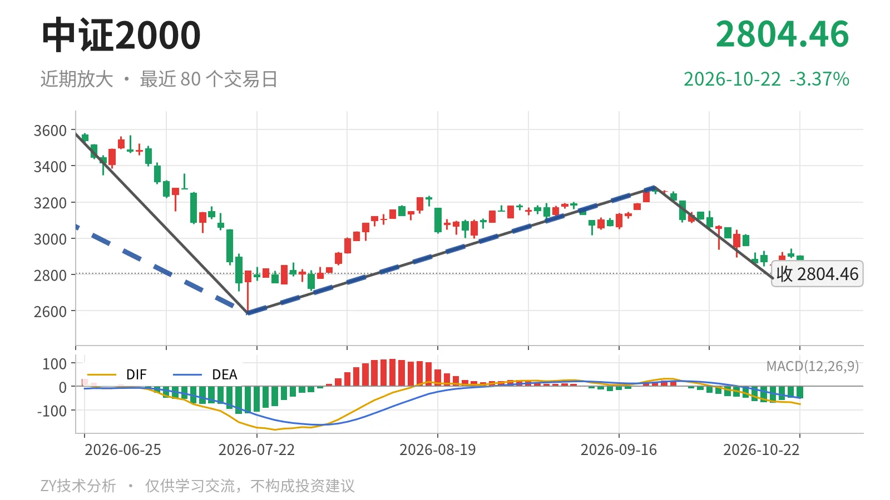

中证2000｜下跌笔未新低，反抽看3381点

最近日线中枢 3381.36—3593.19点，收盘位于中枢之下
一句话：日线结构偏弱，反弹未成笔，反抽观察3381点。
📉 走势结构：仍处下跌线段，反弹只有一笔
中证2000日线仍处在5月14日以来的下跌线段中。该线段从3768.08点跌至2585.35点，跌幅约31.4%，目前没有结束；7月21日至9月22日的上涨只成一笔，没有构成日线线段，因此不改变下跌线段结构。此前2024年2月6日至2026年5月14日的上涨段涨幅约150.6%，但5月14日出现日线一卖3768.08点，6月23日又出现二卖3626.48点，高点一个比一个低，上涨段进入大级别调整。

🧭 中枢与位置：跌破最近中枢，反抽未回
最新收盘2804.46点，位于最近日线笔中枢3381.36—3593.19点下方，低于下沿约17.1%。该中枢中轴3487.28点，较前一个中枢中轴2420.51点明显抬高，属中枢上移；但价格已跌回中枢之下，反抽尚未回到3381点一线。更大级别的线段中枢2085.97—2437.36点仍在上方结构之外，最新价距其上沿还有约367点。
🎯 买卖点：类二买暂定，上档卖点一个比一个低
日线笔级别上，5月14日一卖3768.08点与6月23日二卖3626.48点之后，价格创出2585.35点新低，因此这两个卖点只对应日线笔级别的转折；卖点一个比一个低，压制了7月下旬以来的反弹。线段级别上，7月21日类二买2585.35点出现在5月14日至7月21日下跌线段末端，因该线段仍在延续，只能视为暂定的类二买，会随线段延续而变化；9月22日至10月19日下跌笔低点2778.80点尚未跌破2585点，因此这个类二买结构还没有被破坏。

⚖️ 力度对比：下跌笔未创新低，绿柱明显收缩
同向比较两段日线下跌笔：6月23日至7月21日下跌笔，绿柱面积810，DIF低点-164.2；9月22日至10月19日下跌笔，低点2778.80点高于2585.35点，绿柱面积415，DIF低点-63.7。价格未再创新低，绿柱面积和DIF低点同步抬升，不是“新低不新弱”，而是下跌笔力度收缩。不过该笔已经结束，10月20日至22日的三根K线尚未构成反向笔，最新DIF又回落至-75.3，说明回落仍有下探惯性，力度收缩还需反向笔确认。
🔎 关键位置观察：反抽看3381点，失守2778点则续弱
上方最近日线中枢下沿3381点附近是第一观察位：反抽若回不到3381点上方，结构上构成对最近中枢的回抽不进，形成三卖条件。下方2585点附近是暂定类二买位置，若跌破2585点，则类二买被破坏，5月14日以来的下跌线段继续延伸。短期2778点附近若再失守，9月22日以来的下跌笔就还没结束；重新站上2944点附近并成笔，才可能形成反向笔。当前结构偏弱：价格在最近中枢下方、MACD仍在零轴下、反弹未成笔，弱在反抽尚未回到中枢下沿，且最新价贴近下跌笔低位。
⚠️ 本文为基于公开行情数据的缠论技术结构记录，由程序自动计算并生成，仅供学习交流，不构成任何投资建议。市场有风险，投资需谨慎。